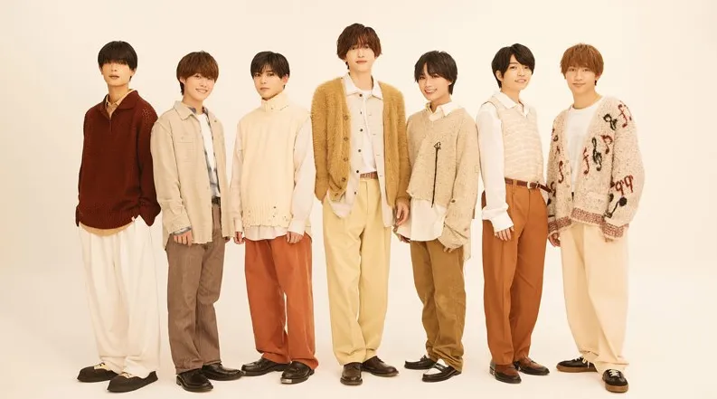

나니와단시는 2021년 11월 12일 데뷔한 쟈니스 사무소 소속의 일본의 7인조 보이그룹이다. 포유처럼 그룹 명에 히라가나가 들어간 그룹이다.
2018년 10월 6일 잡지를 통해 대중에게 결성을 알렸다. 멤버들은 9월 초, 매니저의 단체 메일을 통해서 알게 되었다. 나니와단시의 나니와는 오사카의 옛 지명, 단시는 남자라는 의미이다.
결성 초기인 2018년 후반에서 2019년 중반까진 다이고가 주력 센터인 느낌으로 나아갔다. 그 이후엔 나니와단시는 7명 모두 동등하고, 누구나 센터여도 잘 어울리는 그룹이 되어 가고 있다.
"내가 그룹을 이끌어가자."라는 이런 감각은 원래 없었어요. 굳이 말하자면 외부에 일을 나감으로써 간사이 쟈니스라는 존재를 알리는 창구가 됐으면 좋겠네, 라는 마음으로 해왔지만요. 지금은 7명이 각각 창구가 되어, 제가 이상적으로 생각하는[3] "일렬로 나란히 나아가는 그룹."의 이미지에 가까워지고 있다고 생각해요. 2020.06월호 닛케이 엔터테이먼트 니시하타 다이고의 인터뷰 中
실제로 첫 번째 오리지널 곡과 두 번째 오리지널 곡은 다이고가 센터였지만, 세 번째 오리지널 곡 아오하루 -With U With Me-를 기점으로 계속하여 센터가 바뀐다.